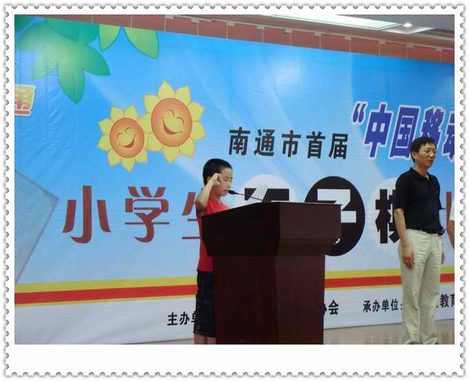

“南通市首届‘中国移动杯’小学生五子棋比赛”赛场掠影
首页
少儿五子棋
#1 “南通市首届‘中国移动杯’小学生五子棋比赛”赛场掠影 作者：黄药师 发表时间：2009-7-31 8:21:49
开幕式前（看到忙碌的有志了吗？ ）
）
开幕式正式开始
选手代表宣誓（个子矮了点，只露出一个头！ ）
）

裁判员代表宣誓。（有点猥琐）
第一阶段小组循环赛之前（有志训话了～ ）
）
怎么还不开始啊，我都快等睡着了～
还不开始，我们一起来“吃”手指吧！
猜子，开局（女：看你开什么局。男：我想我想我再想……你别逼我 ）
）
一切就绪了～准备清场，比赛马上开始了～

比赛进行中～

冠军奖杯
22个代表队66名选手经过11轮小组循环预赛，以及4轮淘汰赛，决出了最终的名次
闭幕式上，有志依然是最忙碌的人！
开始宣布最后成绩
获得二等奖的代表队（暨5～8名）
获得一等奖的代表队
并列第三名的两个代表队（只来得及抓拍了一个队 ）
）
获得亚军的代表队
获得冠军的代表队
最后，领导们对在南通地区开展五子棋活动提出进一步的指示。“南通市首届‘中国移动杯’小学生五子棋比赛”圆满落幕。

［ 茗弈小刀 于 2009-7-31 10:59:50 时奖励此帖[金币加 20 威望加1］
［ 茗弈小刀 于 2009-7-31 11:00:19 时花20金币送鲜花一朵］
#2 Re:“南通市首届‘中国移动杯’小学生五子棋比赛”赛场掠影（陆续更新） 作者：nara 发表时间：2009-7-31 8:42:34
祝贺南通的五子棋发展越来越好
［ 小小九 于 2010-3-25 21:02:27 时花20金币送鲜花一朵］
#3 Re:“南通市首届‘中国移动杯’小学生五子棋比赛”赛场掠影（陆续更新） 作者：黄药师 发表时间：2009-7-31 9:20:55
还在学习探索中～～～～～
#4 Re:“南通市首届‘中国移动杯’小学生五子棋比赛”赛场掠影 作者：天堂的银元 发表时间：2009-7-31 10:07:53
我的照片呢?!
#5 Re:“南通市首届‘中国移动杯’小学生五子棋比赛”赛场掠影 作者：茗弈小刀 发表时间：2009-7-31 10:59:13
有志哥貌似抽l了！
#6 Re:Re:“南通市首届‘中国移动杯’小学生五子棋比赛”赛场掠影 作者：黄药师 发表时间：2009-7-31 19:39:13
引用：
原文由 天堂的银元 发表于 2009-7-31 10:07:53 :
我的照片呢?!
太丑了，屏蔽了！
#7 Re:“南通市首届‘中国移动杯’小学生五子棋比赛”赛场掠影 作者：茗弈小刀 发表时间：2009-7-31 21:36:59
成公布下呀膳大。
#8 Re:“南通市首届‘中国移动杯’小学生五子棋比赛”赛场掠影 作者：沙海一丽 发表时间：2009-7-31 22:02:23
祝贺
#9 Re:“南通市首届‘中国移动杯’小学生五子棋比赛”赛场掠影 作者：彖 发表时间：2009-7-31 22:51:53
晕，我们是来了一趟，照片也没有，奖状也没有，郁闷。有志欺负人。
［ 有志青年 于 2009-8-1 7:35:43 时奖励此帖[金币加 20 威望加1］
#10 Re:Re:“南通市首届‘中国移动杯’小学生五子棋比赛”赛场掠影 作者：黑白子 发表时间：2009-8-1 8:21:20
引用：
原文由 彖 发表于 2009-7-31 22:51:53 :
晕，我们是来了一趟，照片也没有，奖状也没有，郁闷。有志欺负人。
［ 有志青年 于 2009-8-1 7:35:43 时奖励此帖[金币加 20 威望加1］

#11 Re:Re:Re:“南通市首届‘中国移动杯’小学生五子棋比赛”赛场掠影 作者：茗弈小刀 发表时间：2009-8-1 11:51:36
#12 Re:Re:Re:Re:“南通市首届‘中国移动杯’小学生五子棋比赛”赛场掠影 作者：茗弈小刀 发表时间：2009-8-1 11:53:38
#13 Re:“南通市首届‘中国移动杯’小学生五子棋比赛”赛场掠影 作者：黄药师 发表时间：2009-8-1 12:14:55
#14 Re:“南通市首届‘中国移动杯’小学生五子棋比赛”赛场掠影 作者：w在天 发表时间：2009-8-30 16:07:41
唉，要怪就怪我那俩队友，我苦战三局，反杀施令驰，另外两个则输的彻底，要不然额们就是冠军了。。。。。
#15 Re:Re:“南通市首届‘中国移动杯’小学生五子棋比赛”赛场掠影 作者：小小九 发表时间：2009-10-24 16:48:08
是李凌佳琦吗，要我赢也太难了，我的对手可是 蒋 哲 宇！！！！！！！！！！［ 黄药师 于 2009-10-24 20:47:16 时奖励此帖[金币加 20 威望加1］
#16 Re:“南通市首届‘中国移动杯’小学生五子棋比赛”赛场掠影 作者：越狱行辕 发表时间：2009-10-24 20:39:05
都加油哦没准未来的世界冠军将在你们当中产生
#17 Re:Re:Re:“南通市首届‘中国移动杯’小学生五子棋比赛”赛场掠影 作者：黄药师 发表时间：2009-10-24 20:46:52
引用：
原文由 小小九 发表于 2009-10-24 16:48:08 :
是李凌佳琦吗，要我赢也太难了，我的对手可是 蒋 哲 宇！！！！！！！！！！
李凌佳琦毕业了，下面就看你了！
#18 Re:“南通市首届‘中国移动杯’小学生五子棋比赛”赛场掠影 作者：茗弈小刀 发表时间：2009-11-1 22:47:12
药膳大师这几天去哪了?快快现身!